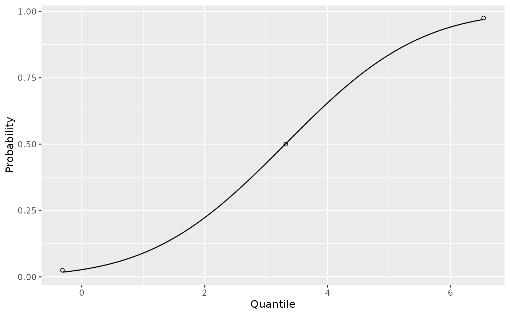
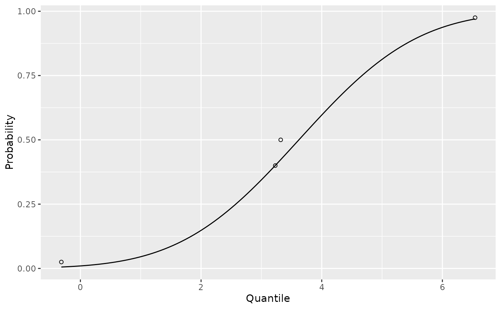
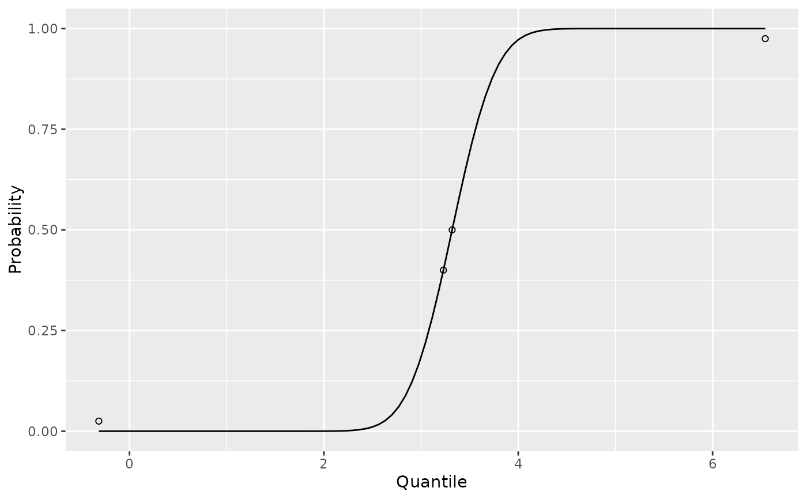

With at least two quantile values find the mean and standard deviation of a normal distribution to match up with empirical values provided.
Arguments
- q
quantile values.
- p
probabilities corresponding to the
qquantiles.- weights
relative weight of each quantile. The higher the weight the better the approximated distribution will be at fitting that quantile.
- ...
additional arguments passed to
optim. See Details.
Value
a pedbp_est_norm object. This is a list with elements:
par: a named numeric vector with the mean and standard deviation for a Gaussian distribution
qp: a numeric matrix with two columns built from the input values of
qandpweights: the
weightsusedcall: The call made
optim: result from calling
optim
Details
For X ~ N(mu, sigma), Pr[X <= q] = p
Given the set of quantiles and probabilities, est_norm uses
optim (with method = "L-BFGS-B", lower =
c(-Inf, 0), upper = c(Inf, Inf)) to find the preferable mean and
standard deviation of a normal distribution to fit the provided quantiles.
Use the weight argument to emphasize which, if any, of the provided
quantiles needs to be approximated closer than others. By default all the
quantiles are weighted equally.
Examples
# Example 1
q <- c(-1.92, 0.1, 1.89) * 1.8 + 3.14
p <- c(0.025, 0.50, 0.975)
x <- est_norm(q, p)
str(x)
#> List of 5
#> $ par : Named num [1:2] 3.31 1.72
#> ..- attr(*, "names")= chr [1:2] "mean" "sd"
#> $ qp : num [1:3, 1:2] -0.316 3.32 6.542 0.025 0.5 ...
#> ..- attr(*, "dimnames")=List of 2
#> .. ..$ : NULL
#> .. ..$ : chr [1:2] "q" "p"
#> $ weights: num [1:3] 1 1 1
#> $ call : language est_norm(q = q, p = p)
#> $ optim :List of 5
#> ..$ par : num [1:2] 3.31 1.72
#> ..$ value : num 8.73e-05
#> ..$ counts : Named int [1:2] 7 7
#> .. ..- attr(*, "names")= chr [1:2] "function" "gradient"
#> ..$ convergence: int 0
#> ..$ message : chr "CONVERGENCE: REL_REDUCTION_OF_F <= FACTR*EPSMCH"
#> - attr(*, "class")= chr "pedbp_est_norm"
x
#> mean sd
#> 3.312550 1.721361
plot(x)

# Example 2 -- build with quantiles that are easy to see unlikely to be from
# a Normal distribuiton
q <- c(-1.92, 0.05, 0.1, 1.89) * 1.8 + 3.14
p <- c(0.025, 0.40, 0.50, 0.975)
# with equal weights
x <- est_norm(q, p)
x
#> mean sd
#> 3.469290 1.563764
plot(x)
# weight to ignore one of the middle value and make sure to hit the other
x <- est_norm(q, p, weights = c(1, 2, 0, 1))
x
#> mean sd
#> 3.621388 1.551445
plot(x)

# equal weight the middle, more than the tails
x <- est_norm(q, p, weights = c(1, 2, 2, 1))
x
#> mean sd
#> 3.3200002 0.3552437
plot(x)
